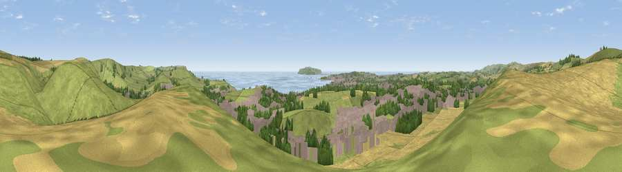

Viewpoint near Preston
#5025 in England · top 19% of its area beats it · near PrestonThe view, rendered

A 360° render of this exact spot computed from the terrain model, tree cover and land cover — summer colours, afternoon light, calibrated against photographs of famous viewpoints. Real trees, hedges and buildings will differ in detail.
The panorama
Grey silhouette: terrain skyline in each direction (720 bearings, Earth curvature and refraction included). Dashed green: skyline with trees (+15 m) and buildings (+8 m) as obstacles. Blue strip: how far the ground is visible on each bearing.
Where the view opens
Wedge length = distance to the farthest visible ground on that bearing (vegetation-aware). Rings at 10, 25 and 50 km.
What fills the view
48% grassland · 20% cropland · 16% built-up · 8% woodland · 7% water
Angular shares of the visible panorama (visual magnitude), not map area. Landscape diversity 0.60 (0–1 Shannon).
Key numbers
More beautiful places nearby
The staircase of upgrades: each row has a higher view potential than everything closer. Driving times are estimates from straight-line distance, calibrated against real road routing — check an actual route before setting out.
| Place | Direction | Drive | Score |
|---|---|---|---|
| Viewpoint near Sutton Poyntz | N · 1 km | ~4 min | 79.9 |
| Viewpoint near Owermoigne | E · 7 km | ~15 min | 81.0 |
| Viewpoint near Chaldon Herring | ESE · 8 km | ~16 min | 82.9 |
| Viewpoint near Chaldon Herring | ESE · 8 km | ~16 min | 83.5 |
| Viewpoint near Chaldon Herring | ESE · 9 km | ~18 min | 83.8 |
| Viewpoint near Abbotsbury | W · 13 km | ~24 min | 85.1 |
| Viewpoint near Abbotsbury | WNW · 13 km | ~24 min | 89.0 |
| Viewpoint near West Bexington | WNW · 15 km | ~26 min | 89.5 |
50.64968, -2.43878 · source: screening · position refined by local search. Computed location — check access rights before visiting.